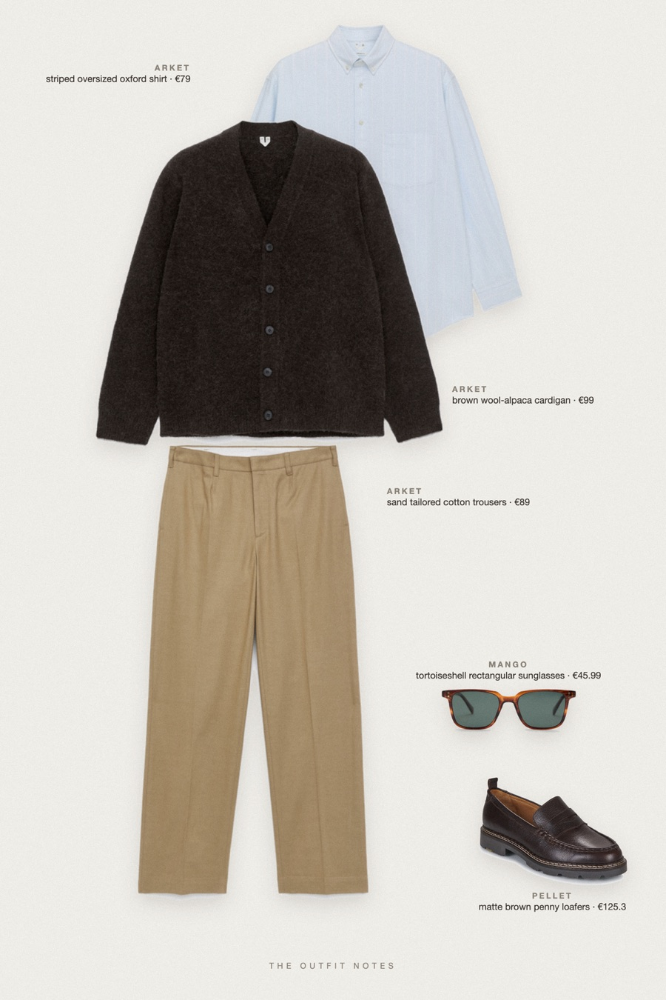
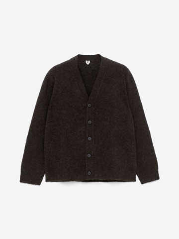
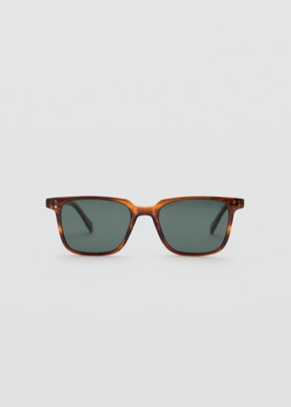

Sunday Cardigan
brown knit, striped oxford

Smart casual outfit for men with a Parisian Sunday mood: an ARKET wool-alpaca brown cardigan over a light blue striped oversized Oxford shirt, sand beige tailored trousers and Pellet Milo loafers. Mango tortoiseshell sunglasses finish this quiet luxury fall outfit idea you can build for under 400 euros.
The pieces
This page contains affiliate links: if you buy through them, we may earn a commission at no extra cost to you. Disclosure.

ARKET
Brown wool-alpaca cardigan
Shop ARKET
ARKET
Striped oversized oxford shirt
Shop ARKET
ARKET
Sand tailored cotton trousers
Shop Pellet
Pellet
Matte brown penny loafers
Shop
Mango
Tortoiseshell rectangular sunglasses
Shop
Prices are indicative, taken when the look was published, and may have changed. Pictures of the outfit are AI-generated illustrations of real products; the product photos are the retailers' own.
Published 1 October 2026.